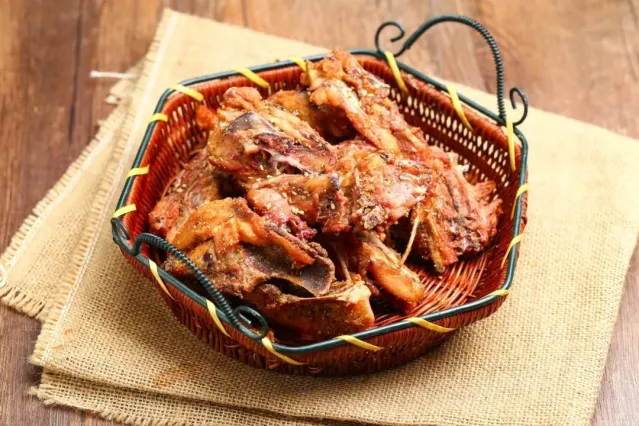
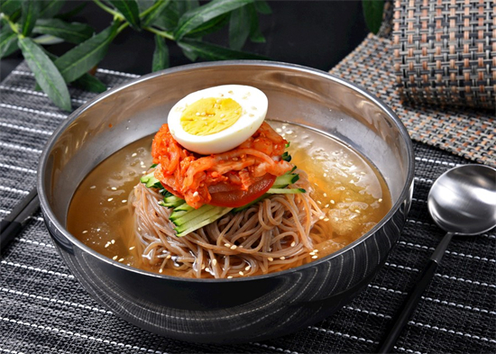

Shenyang (Northeast China) - A Tapestry of Imperial History and Hearty Northeast Charm



Nestled in the heart of Northeast China, Shenyang is a city where the grandeur of imperial history rubs shoulders with the warmth of local life. As the former imperial capital of the early Qing Dynasty, it carries a legacy that’s visible in every corner—from the golden roof tiles of Shenyang Imperial Palace to the ancient city walls that once guarded its streets. But Shenyang isn’t just a museum of the past: wander its bustling food alleys, and you’ll smell the aroma of crispy fried chicken and spicy hot pot; stroll through its parks, and you’ll see locals flying kites or playing traditional chess on stone tables. Whether you’re tracing the footsteps of emperors, savoring bold Northeast flavors, or simply soaking up the laid-back vibe, Shenyang offers a travel experience that’s both rich in history and deeply authentic.
Shenyang’s historical soul lies in its well-preserved imperial and cultural sites. The star attraction, Shenyang Imperial Palace (Mukden Palace), is a UNESCO World Heritage Site and the only surviving imperial palace in China besides Beijing’s Forbidden City. Built in 1625 for Nurhaci, the founder of the Qing Dynasty, it blends Manchu, Han, and Mongolian architectural styles—highlights include the “Hall of Great Harmony” with its dragon-carved pillars and the “Phoenix Tower,” which once served as the emperor’s private viewing platform. A short drive away, Zhaoling Tomb (Beiling Park) is another imperial gem: the mausoleum of Huang Taiji (Nurhaci’s son) is surrounded by pine forests, and its grand stone archways and statues of imperial bodyguards (stone horses, elephants, and lions) offer a glimpse into Qing Dynasty funeral traditions. For a taste of modern history, Shenyang 9·18 History Museum is a moving tribute to the city’s resilience—it documents the 1931 Mukden Incident and its impact on China, with exhibits that are both informative and deeply emotional.

When it comes to natural and scenic spots, Shenyang balances urban greenery with cultural landscapes. Beiling Park, which surrounds Zhaoling Tomb, is the city’s largest park and a favorite among locals. Beyond the imperial tomb, it has lakes where you can rent paddle boats (perfect for summer afternoons), pine-shaded trails for hiking, and even a small zoo with pandas and tigers. In spring, the park’s cherry blossoms bloom, painting the grounds in soft pink; in winter, the lake freezes over, and locals skate or play ice hockey. South Lake Park is another urban oasis—its winding paths, lotus-filled lakes, and flower gardens make it ideal for picnics or leisurely walks. Rent a bike to explore its 52-hectare grounds, or stop at a lakeside café for a cup of hot soya milk. For something a little different, Qipanshan Scenic Area, about 20 kilometers outside the city, offers mountain views, ancient temples, and the Qipanshan Ski Resort (a popular spot for winter sports lovers).
No trip to Shenyang is complete without diving into its hearty, flavor-packed cuisine. Shenyang Spicy Fried Chicken (La Jida) is a local obsession—bite-sized pieces of chicken are marinated in spicy sauce, coated in starch, and fried till crispy, then tossed with garlic, chili peppers, and sesame seeds. It’s spicy, crunchy, and addictive—perfect for sharing (or eating alone!). Liaoning-style Hot Pot (Liaoning Guozi) is another must-try: unlike Sichuan hot pot, it uses a clear bone broth (sometimes seasoned with goji berries and wolfberries) as the base, and the star ingredients are fresh lamb slices (so thin they cook in seconds) and local mushrooms. Dip the cooked meat in sesame sauce with garlic and coriander, and you’ll taste the pure, savory flavors of Northeast ingredients. For a quick snack, Shenyang Cold Noodles (Liangmian) hit the spot—thick, chewy wheat noodles are tossed with a tangy sauce (vinegar, soy sauce, and chili oil), shredded cucumber, and boiled eggs. It’s refreshing in summer and can be made spicy or mild, depending on your taste.

Travel Tips for Shenyang
Best Time to Visit:
Tip 1: Spring (April–May) and autumn (September–October) are ideal. Temperatures range from 10–22°C (50–72°F), with mild weather and fewer crowds. Summer (June–August) is warm (25–30°C) and great for park visits, while winter (December–February) is cold (-10–0°C) but perfect for skiing at Qipanshan.
Transportation:
Tip 1: Fly to Shenyang Taoxian International Airport (40 minutes by taxi to the city center, ~80 CNY). Use the subway (Lines 1, 2, 9 cover major attractions) or taxis (start at 8 CNY). For day trips to Qipanshan, take bus 168 from Shenyang Railway Station (1 hour, 5 CNY).
Essential Tips:
Tip 1: Book Shenyang Imperial Palace tickets online 1 day in advance—weekends can get busy with tour groups.
Tip 2: For authentic spicy fried chicken, head to small eateries in Dazhong Street (look for long lines of locals).
Tip 3: Bring warm clothes in winter—temperatures can drop below -15°C, so pack thermal underwear and waterproof boots.